채널: Level1Techs | 길이: 9:32 | 날짜: 2026-08-06
영상은 "Zotac 4090을 기억하시나요?"라는 질문으로 시작한다. 진행자는 이 카드가 24GB에서 48GB로 업그레이드될 예정이라고 밝힌다. GPU를 업그레이드할 때는 GPU와 메모리만 분리하면 된다는 점을 강조하며, 이 작업이 생각보다 단순한 원리로 이루어진다는 것을 설명한다. 즉, 기존 카드에서 칩을 분리해 새 PCB에 재장착하는 방식이다.
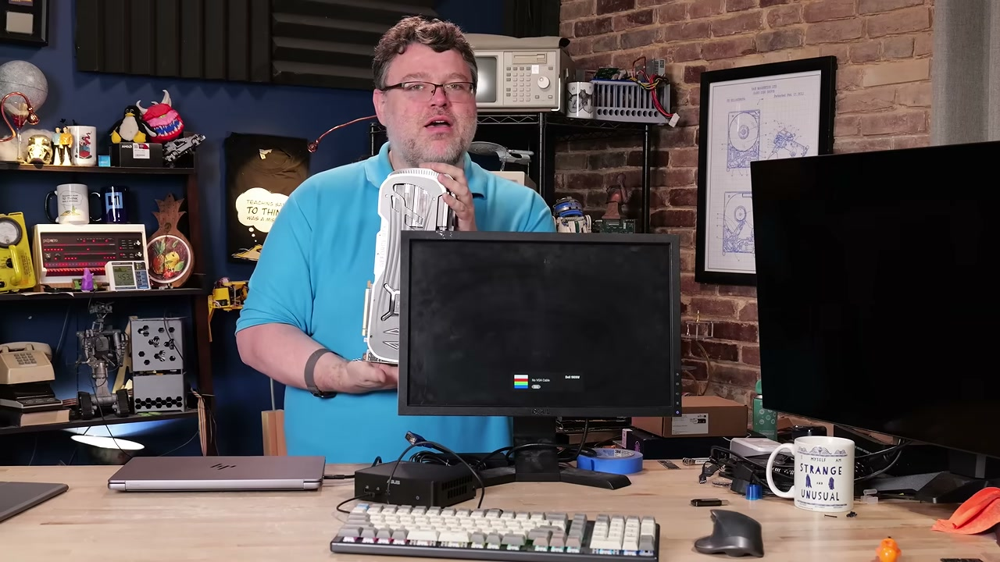
이 도입부는 단순한 하드웨어 리뷰가 아니라, 소비자가 자신의 하드웨어를 어떻게 재활용할 수 있는지에 대한 문제제기를 담고 있다. 진행자는 "앞으로는 이런 모습이 아닐 것"이라는 표현으로, 기존의 완제품 소비 방식과 다른 새로운 패러다임을 암시한다.
24GB에서 48GB로 업그레이드할 때 필요한 주요 부품이 제거된 Zotac PCB 기판이 소개된다. 진행자는 이 작업을 두고 "엔비디아는 그걸 좋아하지 않아요"라고 솔직하게 언급하면서도, "하지만 업그레이드하세요. 꽤 괜찮은 업그레이드죠?"라고 권유한다. 이렇게 빠른 48GB GPU를 얻는 가장 저렴한 방법은 "말도 안 되게 저렴한 방식"이라고 강조하며 웃음을 터뜨린다.
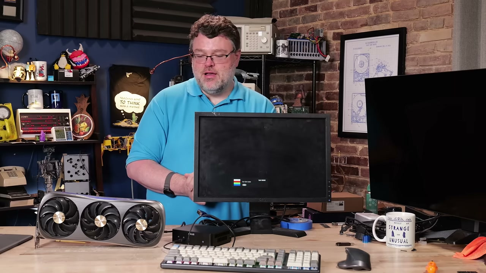
이 섹션은 개조의 물리적 실체를 보여주는 동시에, 제조사 정책과 소비자 권리 사이의 긴장 관계를 드러낸다. "아, 잘 됐으면 좋겠네요"라는 발언은 개조의 성공에 대한 기대와 함께 불확실성도 내포한다.
진행자는 "돌아왔습니다. 이것은 조탁입니다"라고 말하며 거대한 Zotac 4090 GPU가 박스에 담겨 돌아왔다고 밝힌다. 카드에는 "사용 전에 보호 필름을 제거하세요"라는 안내가 붙어 있으며, 2슬롯 블로어형 카드로 소개된다. 진행자는 "무슨 일이야?"라며 놀라움을 표현하고, 업그레이드 과정이 "제 보드에서 칩을 꺼내서 새 보드에 장착하는 것"이라고 재차 설명한다.
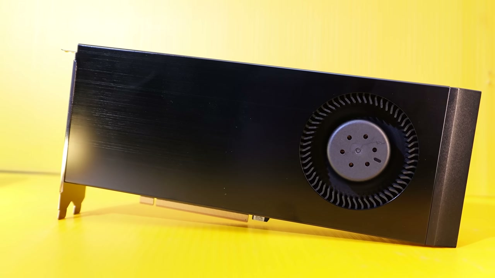
이 장면은 개조 작업이 실제로 성공적으로 완료되었음을 확인시켜 주며, 블로워형 2슬롯 설계가 이후 듀얼 GPU 구성에서 중요한 냉각 이점을 제공한다는 점으로 이어진다.
진행자는 이 작업이 "엔비디아가 매우 불쾌해할 만한 사안이지만, 소비자 보호법에 따라 마땅히 보장되어야 할 사항"이라고 주장한다. "저건 내 칩들이야(I paid for those chips)"라며, 자신이 적절하다고 판단하는 방식으로 그것들을 재구현할 수 있다고 말한다. 이어 "우리가 가져야 할 권리가 아니라고 생각하기 전에, 저는 동의하지 않습니다. 전적으로 동의하지 않습니다"라며 강한 어조로 반박한다.
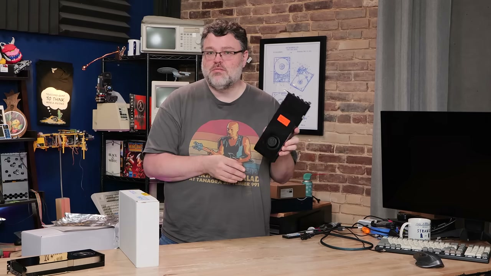
이 섹션은 영상의 핵심 논조를 대표한다. 즉, 하드웨어 구매자는 자신이 구매한 물리적 자산에 대해 완전한 처분 권한을 가지며, 제조사의 정책적 반대가 이를 무효화할 수 없다는 것이다.
진행자는 최초 판매 원칙뿐만 아니라 항공 산업까지 거슬러 올라가는 확립된 판례법이 있다고 언급한다. 라이트 형제가 항공 산업을 발명했다는 사실에 굉장히 자부심이 강했지만, 그것이 "와, 그러고 싶어하는 건 알겠지만, 그런 태도는 옳지 않아"라는 느낌이라는 비유를 든다. 즉, 발명자라도 소비자가 자신의 물건을 어떻게 사용할지 통제할 수 없다는 논리다. 따라서 이번 업그레이드를 통해 "이 GPU는 여전히 4090이지만, 48GB의 VRAM을 갖추게 되어 훨씬 더" 강력해졌다고 정리한다.
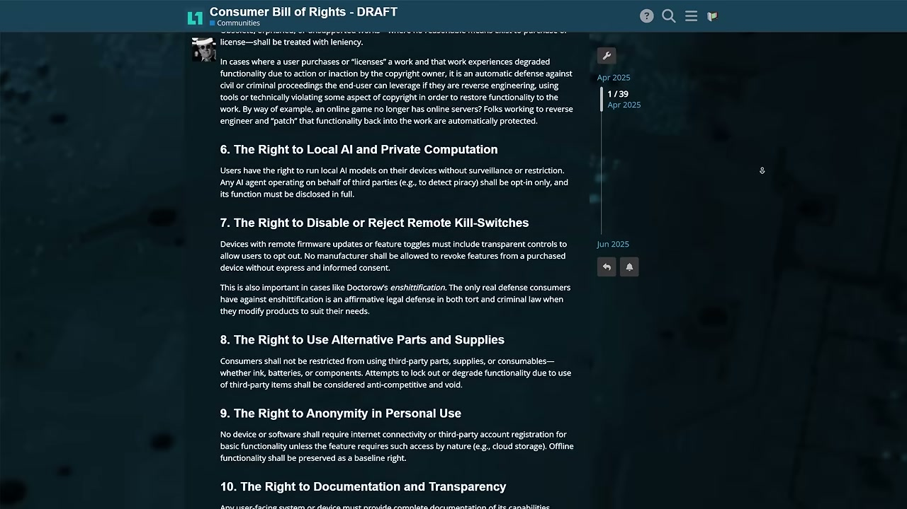
이 비유는 추상적인 법리를 시청자가 직관적으로 이해할 수 있게 만들어 주며, 개조의 정당성을 강화하는 수사적 장치로 기능한다.
48GB VRAM을 갖춘 GPU는 훨씬 강력한 성능을 발휘하며, 이번 업그레이드 비용은 약 1,600~1,700달러 수준이었다고 밝힌다. 카드에는 진행자의 이름이 적혀 있어 재미있다고 언급하며, 12V-2 전원 커넥터가 있다고 설명한다. 또한 클램쉘 디자인으로 변경되면서 VRAM 냉각을 돕기 위해 금속 백플레이트가 장착되었다고 덧붙인다. 중요한 점은 "기존 카드를 업그레이드해 드릴 수는 없습니다. 그렇게는 안 돼요"라며, GPU를 분리해서 완전히 새로운 설계의 새 PCB에 장착해야 한다는 것이다.
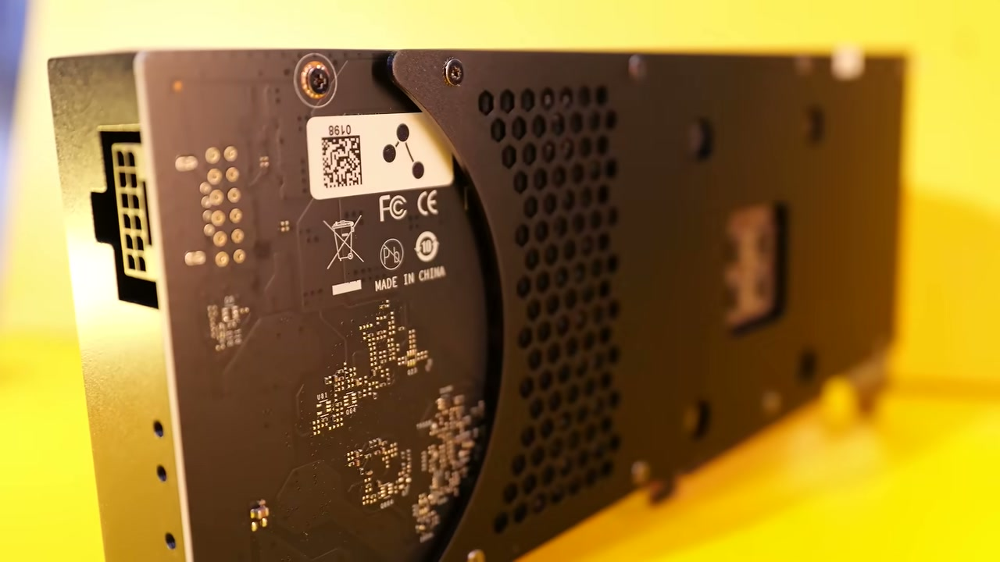
이 섹션은 개조의 기술적·경제적 조건을 구체적으로 제시한다. 즉, 단순한 BIOS 플래싱이 아니라 물리적 재조립이 필요하며, 그럼에도 1,600~1,700달러라는 비용이 합리적이라는 판단을 뒷받침한다.
진행자는 "정말 놀랍네요"라며 감탄하고, 4090이 두 개 있다면 두 개로 작업하는 것을 추천해도 될지 묻는다. "매우 가치 있는 업그레이드"라고 평가하며, RTX A6000과 비교해서 성능이 어떤지 확인해 볼 예정이라고 예고한다. 이어 "쌍둥이(twins), 바스티유(Bastille)"라는 표현으로 두 카드를 지칭하며 듀얼 구성의 상징성을 부여한다.
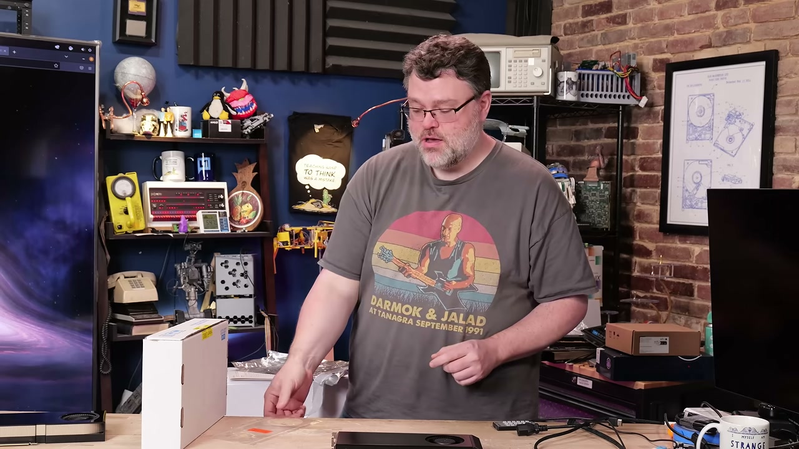
이 섹션은 개조 카드의 실질적 가치를 검증하기 위한 비교 실험의 예고편이며, 이후 리눅스 환경에서의 벤치마크 결과로 이어진다.
"이미 4090을 가지고 있다면, 이 방법이 48기가 GPU 업그레이드를 받는 가장 저렴한 방법임은 분명합니다"라며, 업그레이드 서비스를 제공하는 곳으로 "Greg의 GPU 연구실(GPU Lab)"을 소개한다. 진행자는 이 업체에 익명으로 연락했다고 밝히며, "위장 기능은 다소 아쉬웠지만, 서비스와 제품 품질은 최고였습니다"라고 평가한다. 이어 "GPU가 96기가나 있네요. 진열장에 넣어둬야겠죠?"라고 농담 섞인 감탄을 한다.
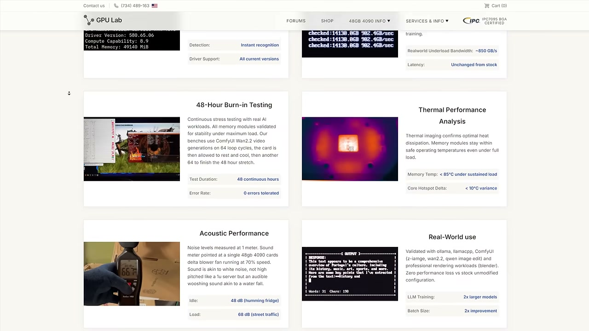
이 섹션은 개조 서비스의 실제 경로를 제시하며, 신뢰할 수 있는 업체를 통한 작업의 품질을 보증하는 역할을 한다.
진행자는 이전에 검토했던 프랙탈 사례를 언급하며, AM5 시스템에서도 이 GPU들을 사용해 봤다고 밝힌다. 중요한 점은 이 GPU들이 X8 방식으로만 연결될 예정이라는 것이다. 이는 GPU 간 데이터 전송이 NVLink를 통하지 않고 PCIe를 통해 이루어지기 때문이며, 진행자는 "여러분 중 일부가 뭐라고 할지 모르겠네요"라며 논란의 여지를 인정한다.
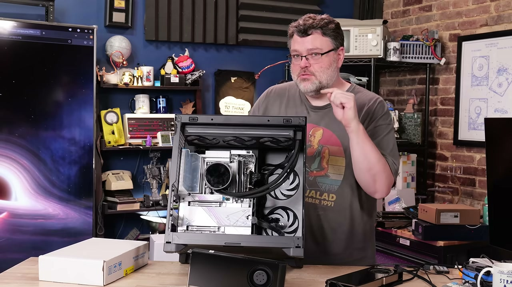
이 섹션은 듀얼 GPU 구성의 대역폭 제약을 명확히 하며, 이후 PCIe 피어투피어 비활성화 문제로 이어진다.
진행자는 "엔비디아는 4090에서 PCIe 간 피어투피어 기능을 비활성화했습니다"라고 단언하며, 이에 대해 "콘, 무슨 소리 하는 거야?"라고 반문하는 듯한 뉘앙스를 보인다. 이어 듀얼 슬롯 디자인이 마음에 드는 이유로 "두 개의 블로워 스타일 GPU 사이에 충분한 통풍 공간이 확보되기 때문"이라고 설명한다. 부하가 걸렸을 때만 소리가 조금 더 커지지만, 설정을 조정할 필요는 없다고 덧붙인다.
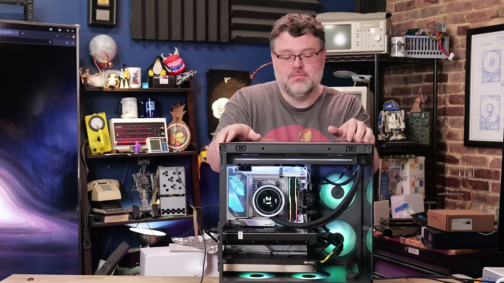
이 섹션은 개조 카드의 물리적 장점과 플랫폼 제약을 동시에 다루며, 실사용 환경에서의 트레이드오프를 설명한다.
18인치 거리에서 약 59~60dB 수준이며, 이는 AIDA64 스트레스 테스트를 통해 얻은 결과다. 추론이나 AI 워크로드를 수행할 때는 훨씬 조용하며, 지속적인 부하가 걸릴 경우 대략 45~48dB 정도다. 추론 워크로드의 핫스팟은, 예를 들어 LM Studio 텐서 병렬 처리 2를 실행할 때만 해도 약 60°C 정도라고 밝힌다.
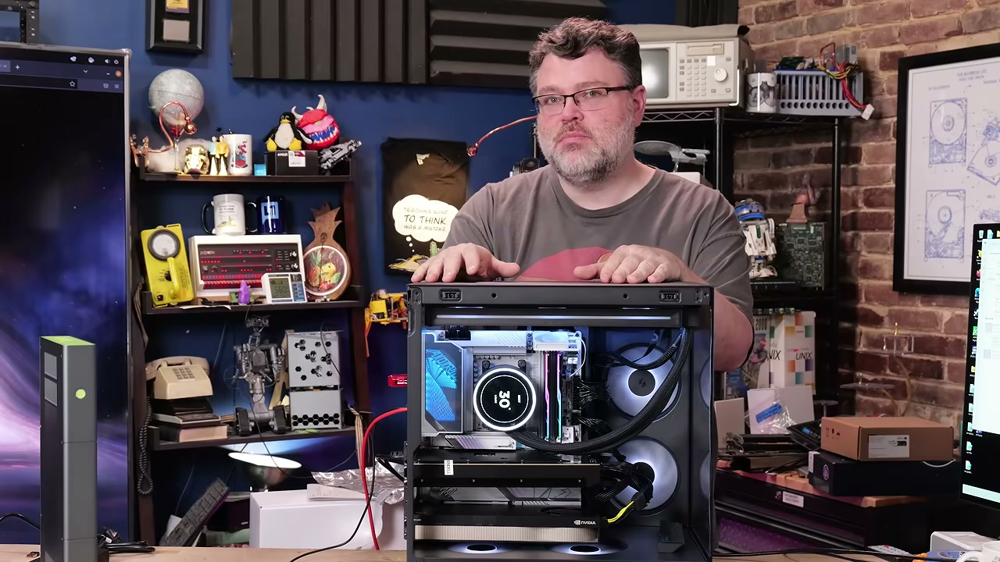
이 섹션은 개조 카드가 AI 추론 워크로드에서 발열과 소음 모두 상대적으로 양호하다는 실측 근거를 제공한다.
최대 부하 상태에서도 81°C 안팎을 유지하며, 최고 기온은 84°C다. 새 방열판과 그래픽카드 등을 장착했음에도 불구하고 최대 온도 이하로 유지되고 있으며, 송풍 모터는 열을 제거하는 데 매우 효과적이라고 평가한다. 이는 개조 카드의 냉각 설계가 원본보다 개선되었음을 시사한다.
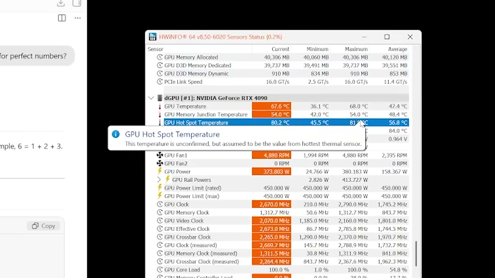
이 섹션은 개조 작업이 단순한 메모리 확장을 넘어 냉각 성능 향상까지 가져왔다는 점을 강조한다.
"확실히 말씀드리자면, NVIDIA 레퍼런스 A6000과 비교하고 싶으시다면, Franken 4090이 모든 면에서 압도적인 성능을 보여줍니다"라고 단언한다. 냉각 성능 향상, 팬 작동 방식 개선, 냉각 관점에서 더 나은 그래픽카드 설계를 근거로 들며, "64세인 우리 두뇌가 그걸 아주 명확하게 보여준다고 생각해요"라는 다소 유머러스한 표현으로 신뢰를 강조한다.
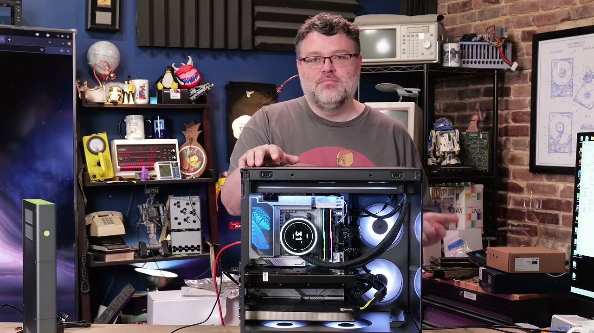
이 섹션은 개조 카드가 단순한 가성비를 넘어 레퍼런스 워크스테이션 카드보다 우수한 냉각 설계를 가졌다는 주장을 담고 있다.
시스템을 리눅스로 업데이트한 후 "꽤 흥미로운 결과"가 나왔다고 밝힌다. 포럼에 더 자세한 정보가 있는 게시글이 있으며, "저희의 RTX 4090은 적어도 이 구성에서는 RTX A6000보다 상당히 빠릅니다"라고 보고한다. 이어 "그리고 이건 암페어 세대지, 에이다 세대가 아닙니다"라며 비교 대상의 세대 차이를 명확히 한다.
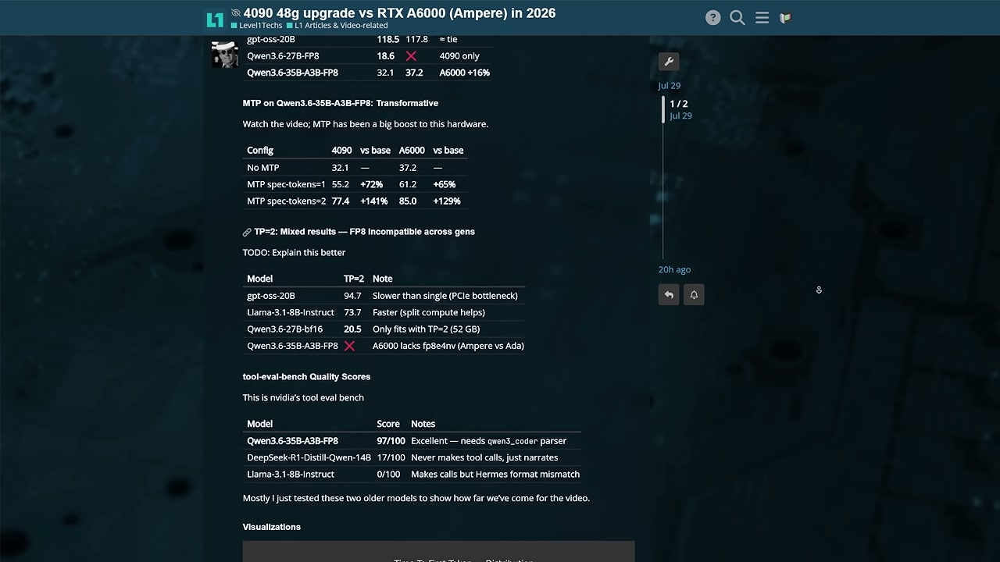
이 섹션은 개조 카드의 실질적 성능 우위를 데이터로 뒷받침하며, 리눅스 환경에서의 호환성도 문제없음을 시사한다.
진행자는 예전에 운 좋게 얻은 암페어 RTX 5880이 몇 개 있었고 정말 좋았다고 회상한다. 이어 "제가 이 에이다 제너레이션 카드를 가지고 있는 유일한 이유는 몇몇 괴짜 관객분들이 저에게 보내주셨기 때문입니다"라고 밝힌다. 즉, 시청자들이 자신의 예전 암페어 카드를 보내며 에이다로 업그레이드하도록 도왔다는 것이다.
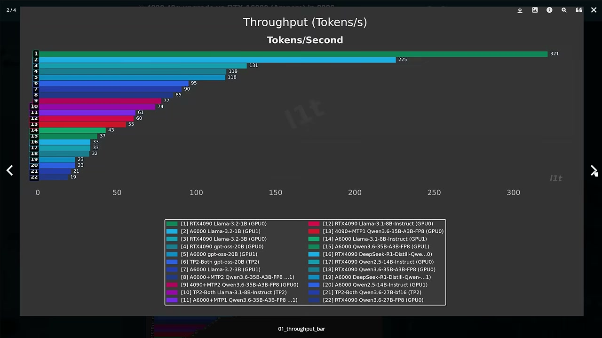
이 섹션은 커뮤니티의 자발적 지원이 이 프로젝트를 가능하게 했음을 보여주며, 영상 후반의 포럼 참여 권장으로 이어진다.
암페어에서 에이다로 업그레이드한 시청자들의 사례를 소개하며, "여기, 내 예전 암페어 카드 가져가"라고 하는 것 같았다고 표현한다. 이 카드들은 계속해서 가동되고 있으며, "우버가름(Ubergaum)과 UOS의 프로젝트는 허깅페이스 포럼에서 볼 수 있는데, 정말 재밌었어요"라고 언급한다. 이 모든 것들이 거의 끊임없이 작동하도록 사용되며, "제가 생각했던 것보다 훨씬 나아졌다는 사실에 좀 놀랐어요. 이제 사람들이 4090을 업그레이드하는 이유를 알겠네요"라고 말한다.
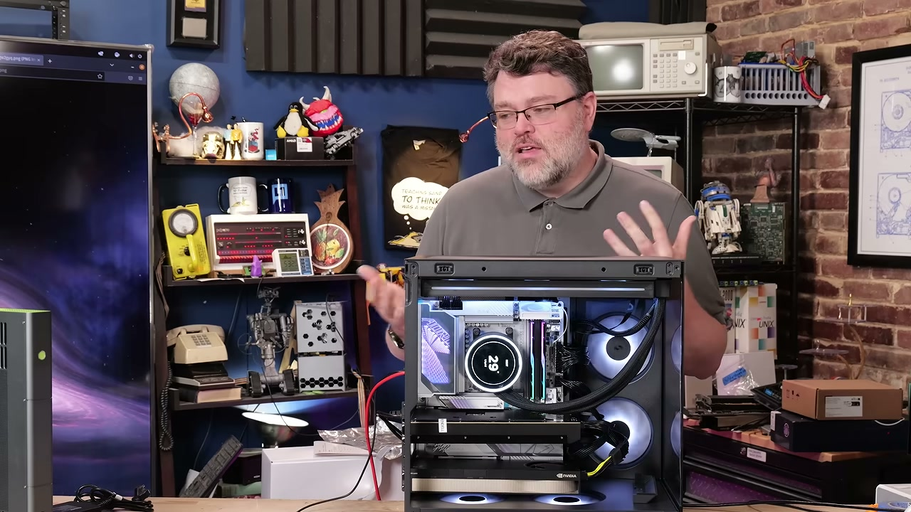
이 섹션은 개조 카드가 실제 지속적 워크로드에서 안정적으로 동작한다는 실증적 증거를 제공하며, 커뮤니티 생태계의 중요성을 부각한다.
진행자는 "소규모 고밀도 모델을 테스트하는데, 이것이 제가 정말로 원하는 것이고, 4090은 소규모 고밀도 모델을 실행하는 데 있어서 정말 뛰어난 성능을 보여줍니다"라고 평가한다. 전력 소모량이 그리 많지 않고, 그래픽카드 전력 제한인 450W에 훨씬 못 미치며, 소음 수준도 적당한데 온도는 70°C 미만으로 유지된다고 밝힌다.
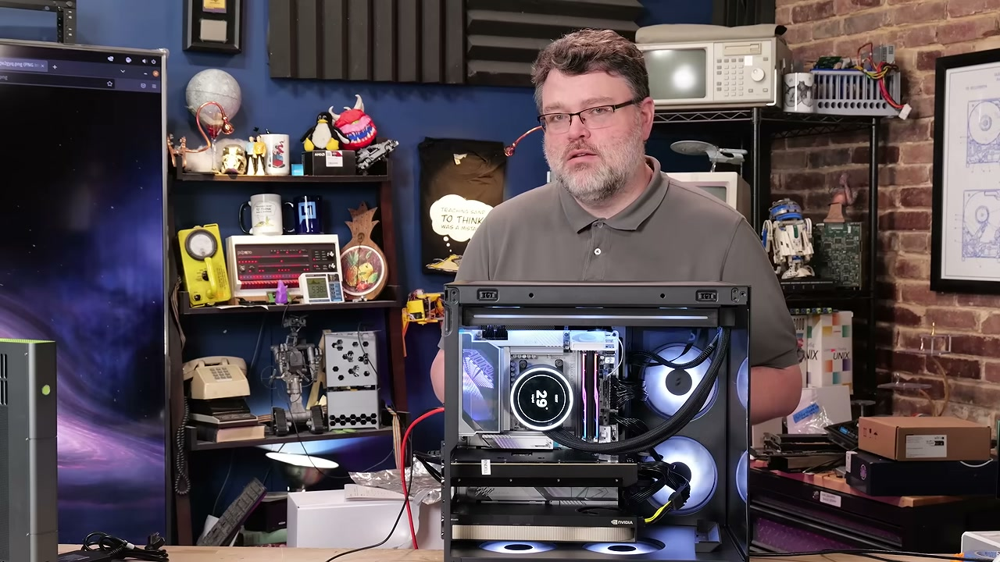
이 섹션은 48GB VRAM 개조가 특히 소형 고밀도 모델 추론 워크로드에서 높은 가성비를 발휘한다는 점을 강조한다.
"우리가 고문 테스트 같은 걸 하면서 겪었던 최악의 소음 수준에는 한참 못 미쳤습니다"라며, 소음 수준은 일반적인 엔비디아 그래픽카드와 거의 비슷하다고 평가한다. 이어 "돌려받은 카드에 제 칩이 들어있는 걸 봤어요. 엔비디아 브랜드도 없고, 엔비디아 관련 표시도 전혀 없습니다. 말 그대로 내 칩을 가져다가 다른 보드에 옮겨 놓는 거예요"라고 설명한다.
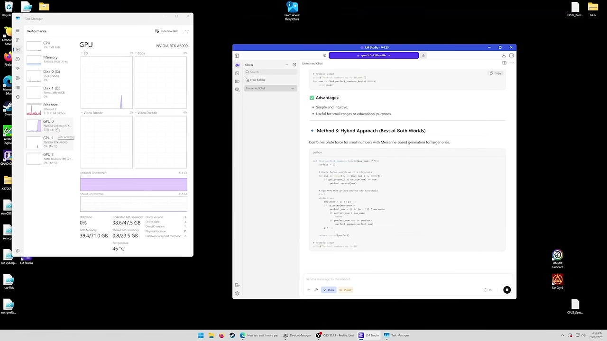
이 섹션은 개조 카드가 물리적으로 완전히 새로운 정체성을 갖게 되었음을 보여주며, 브랜드 통제를 벗어난 소비자 자산의 성격을 강조한다.
"RTX 6000 가격의 2/3에서 절반 정도 가격으로 이 GPU 두 개를 가질 수 있다"라고 밝히며, RTX 6000은 96GB의 VRAM을 가지고 있다고 설명한다. "짜잔, 이 기기에는 96기가바이트의 VRAM이 탑재되어 있습니다. 그리고 RTX 6000 시리즈는 현재 1만 달러가 넘는 가격에 판매되고 있습니다"라고 덧붙인다. "이미 4090을 가지고 있고 15, 16, 1700달러 정도에 업그레이드할 수 있다면, 그건 괜찮은 선택이죠"라고 정리한다.
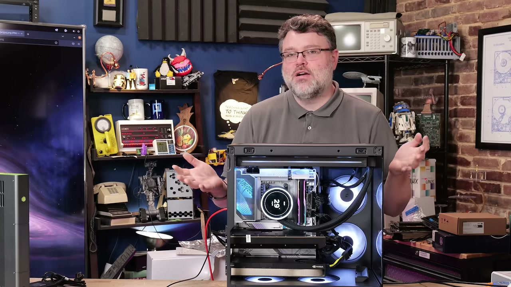
이 섹션은 개조 카드의 경제적 가치를 극명하게 보여주는 핵심 대목으로, 1만 달러 이상의 워크스테이션 카드 대비 압도적 가성비를 주장한다.
"물 블록도 얻을 수 있어요. 아마 이런 걸 몇 개 더 만들 것 같고, 물 블록 버전도 만들어 볼 생각이에요. 왜냐하면 그게 다루기가 더 쉽거든요"라고 밝힌다. 괜찮은 워터블록이 포함된 제품을 미리 배송받아서 구매하는 것도 하나의 선택지가 될 것이라고 덧붙인다. 또한 "GMK Tech의 Evo X3처럼 128GB VRAM을 탑재한 제품도 있는데 96GB VRAM을 사용하는 건 말이 안 된다"라고 언급하며, Evo X2도 있다고 소개한다.
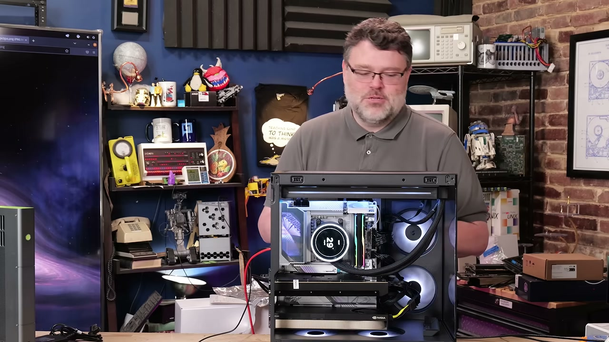
이 섹션은 개조 카드의 확장 가능성과 함께, 시중에 나온 고용량 VRAM 제품들과의 비교를 제시한다.
"Strix Halo의 다양한 버전들도 128GB VRAM을 탑재하고 있죠. 네, 이게 바로 LPDDR5입니다. 이는 토큰 생성 및 디코딩 속도를 훨씬, 훨씬 빠르게 합니다"라고 설명한다. 하지만 "이것이 바로 VRAM입니다. 이건 그냥 일반 RAM이에요. 대역폭 차이가 상당하다는 점입니다. 하지만 이것은 이것보다 가격이 저렴합니다"라며, LPDDR5 기반 통합 메모리와 실제 GDDR VRAM 간의 대역폭 차이를 지적한다.
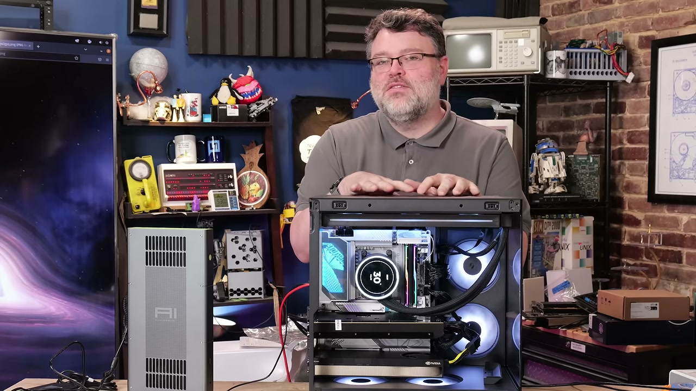
이 섹션은 128GB 통합 메모리 제품과 48GB GDDR 개조 카드 간의 트레이드오프를 설명하며, 용량과 대역폭의 상충 관계를 부각한다.
"지금 가격이 4천 달러 정도라고 해도 말이죠. 모르겠습니다. 우리는 실험을 진행해야 합니다"라며 가격 변동성을 언급한다. 이어 "이 일의 또 다른 측면은 이것이 기업 하드웨어의 재활용 및 업그레이드라는 점입니다. 이러한 점이 제게 미래에 대한 희망을 줍니다. 일부 사람들은 게임이나 기타 용도로 기업용 하드웨어를 사용해 왔는데, 이것은 그 하드웨어를 재활용하는 것입니다"라고 강조한다.
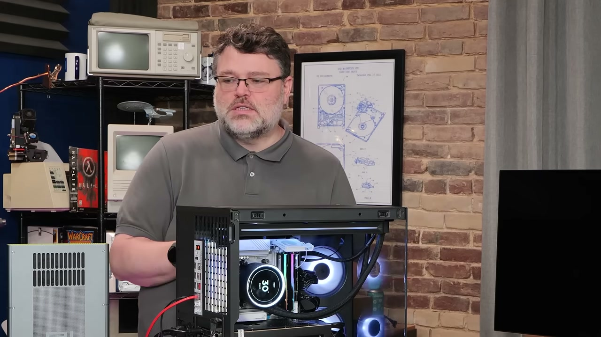
이 섹션은 개조 작업을 단순한 개인 취미가 아니라 지속가능성과 자원 재활용의 관점에서 재조명한다.
"납땜 작업과 새로운 PCB가 필요합니다. 만약 다른 모든 제품의 생산이 중단된다면 우리의 미래는 그런 모습이 될지도 모릅니다"라고 전망한다. 이어 "BC250 같은 모델도 잊지 마세요. 이제 언락되어서 1080p 해상도의 AAA급 게임을 거의 60 FPS로 구동할 수 있습니다. BC250과의 경쟁은 쉽지 않을 것입니다"라고 덧붙인다.
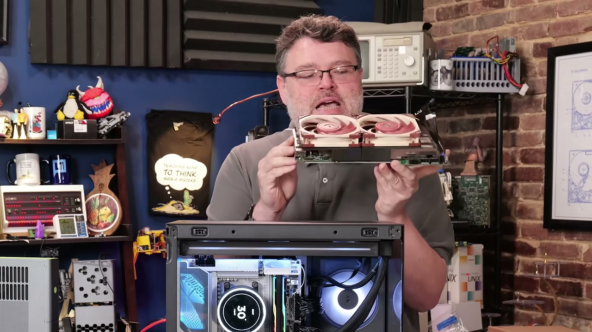
이 섹션은 개조 카드가 단순한 AI 워크로드를 넘어 게이밍 영역까지 확장될 가능성을 제시하며, 경쟁 하드웨어와의 비교 우위를 논한다.
"하지만 게임용 PC처럼 사용할 수도 있어요. 사실 리눅스 쪽에서 잠금 해제 같은 작업이 더 많이 필요하지만, 이건 납땜이나 잠금 해제 같은 복잡한 과정을 거쳐야 하는, 원래 용도와는 전혀 다른 방식으로 하드웨어를 재활용하는 또 다른 사례입니다"라고 정리한다.
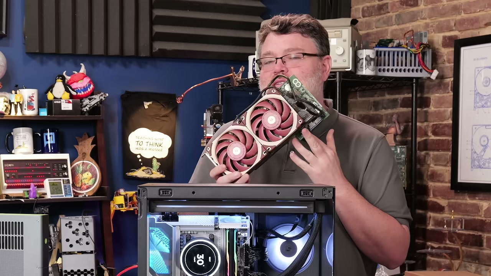
이 섹션은 개조와 언락이 결합된 복합적 재활용 사례로서, 하드웨어의 원래 용도를 초월한 활용 가능성을 보여준다.
"대만까지 가지 않고도 GPU 메모리를 48기가로 업그레이드하는 건 제가 직접 경험한 일입니다. 그러니, 이걸 하고 싶으시다면, 포럼에서 활동하세요. 사용하시는 기기의 사진을 보여주세요"라고 권장한다. 이어 "46기가바이트. 괜찮은. 저는 로그아웃하고 포럼에서 뵙겠습니다. 와, 업그레이드됐네"라는 말과 함께 음악이 흐르며 영상이 마무리된다.
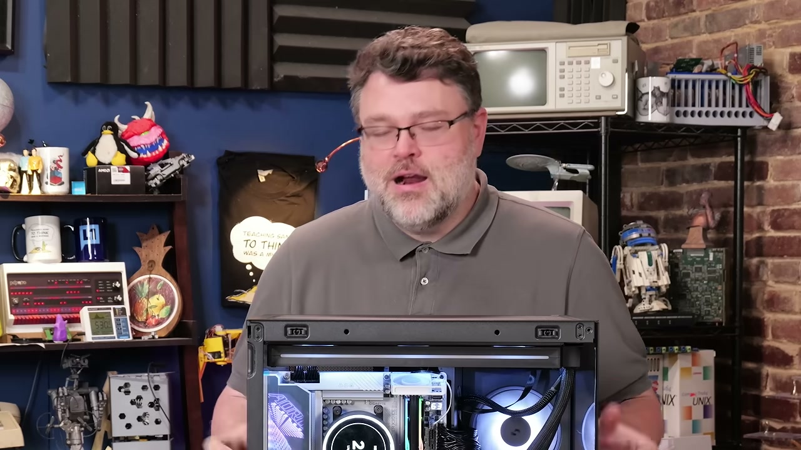
이 섹션은 시청자 커뮤니티의 참여를 독려하며, 개조 프로젝트가 개인의 경험을 넘어 집단적 지식 공유로 확장되기를 바라는 진행자의 의도를 담고 있다.
"엔비디아는 그걸 좋아하지 않아요. 하지만, 업그레이드하세요. 꽤 괜찮은 업그레이드죠, 그렇죠?"
"저건 내 칩들이야. 저는 제가 적절하다고 판단하는 방식으로 그것들을 다시 구현할 수 있습니다."
"우리가 가져야 할 권리가 아니라고 생각하기 전에, 저는 동의하지 않습니다. 전적으로 동의하지 않습니다."
"라이트 형제는 항공 산업을 발명했다는 사실에 대해 굉장히 자부심이 강했다. 그건 마치 '와, 그러고 싶어하는 건 알겠지만, 그런 태도는 옳지 않아'라는 느낌이야."
"실제로 이렇게 빠른 48기가 GPU를 얻는 가장 저렴한 방법은 말도 안 되게 저렴한 방식입니다."
"이 GPU는 여전히 4090이지만, 48GB의 VRAM을 갖추게 되어 훨씬 더 강력한 성능을 발휘하게 되었습니다."
"Franken 4090이 모든 면에서 압도적인 성능을 보여줍니다. 냉각 성능 향상, 팬 작동 방식 개선, 냉각 관점에서 더 나은 그래픽 카드 설계."
"RTX 6000 가격의 2/3에서 절반 정도 가격으로 이 GPU 두 개를 가질 수 있다는 거예요."
"이것이 기업 하드웨어의 재활용 및 업그레이드라는 점입니다. 이러한 점이 제게 미래에 대한 희망을 줍니다."
"대만까지 가지 않고도 GPU 메모리를 48기가로 업그레이드하는 건 제가 직접 경험한 일입니다."
소비자 권리와 하드웨어 소유권의 재정의: 이 영상의 가장 중요한 메시지는 소비자가 구매한 하드웨어에 대해 완전한 처분 권한을 가진다는 것이다. 최초 판매 원칙과 항공 산업 판례를 근거로, 제조사의 정책적 반대가 소비자의 재활용·개조 권리를 침해할 수 없다는 논리를 펼친다. 이는 단순한 기술 리뷰를 넘어 디지털 소유권에 대한 철학적 주장이다.
경제적 가치의 극대화: 1,600~1,700달러의 업그레이드 비용으로 48GB VRAM을 확보하는 것은, 1만 달러 이상의 RTX 6000 시리즈나 4,000달러 수준의 대안 제품과 비교할 때 압도적인 가성비다. 특히 이미 4090을 보유한 사용자에게는 가장 저렴한 48GB GPU 확보 경로다.
실사용 성능의 검증: 리눅스 환경에서 RTX A6000보다 상당히 빠른 성능, 81~84°C의 안정적 온도, 45~60dB의 양호한 소음 수준, 450W 한도 대비 낮은 전력 소모는 개조 카드가 실험실 수준을 넘어 실전 워크로드에서도 신뢰할 수 있음을 보여준다. LM Studio 텐서 병렬 처리, HuggingFace 프로젝트 등 실제 AI 워크로드에서의 안정성도 입증되었다.
미래 하드웨어 생태계에 대한 전망: 진행자는 "다른 모든 제품의 생산이 중단된다면 우리의 미래는 그런 모습이 될지도 모릅니다"라며, 납땜과 새 PCB를 통한 재활용이 미래의 표준이 될 가능성을 제시한다. 이는 BC250 언락, 리눅스 잠금 해제 등과 함께 하드웨어의 원래 용도를 초월한 활용 사례로 확장된다.
커뮤니티 기반 지식 공유의 중요성: 시청자들이 에이다 카드를 기부하고, 허깅페이스 포럼에 프로젝트를 공유하며, GPU 랩 같은 전문 업체가 서비스를 제공하는 생태계는 개인적 개조를 집단적 혁신으로 발전시킨다. 진행자가 포럼 참여와 기기 사진 공유를 권장하는 것은 이러한 커뮤니티 중심 발전의 연장선이다.
실용적 시사점: 48GB VRAM 개조는 소형 고밀도 모델 추론, 듀얼 GPU 구성, 게이밍까지 다양한 워크로드에서 활용 가능하다. 다만 PCIe 피어투피어 비활성화, NVLink 부재, X8 연결 제약 등은 듀얼 GPU 구성 시 고려해야 할 제약이다. 또한 개조 과정에서 납땜과 새 PCB가 필요하므로 전문 업체를 통한 작업이 권장된다.
댓글
GitHub 이슈 기반 댓글 시스템입니다.